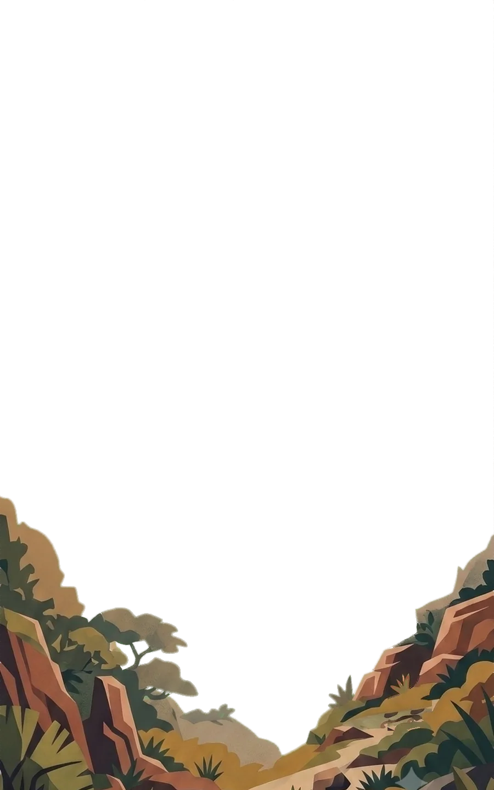
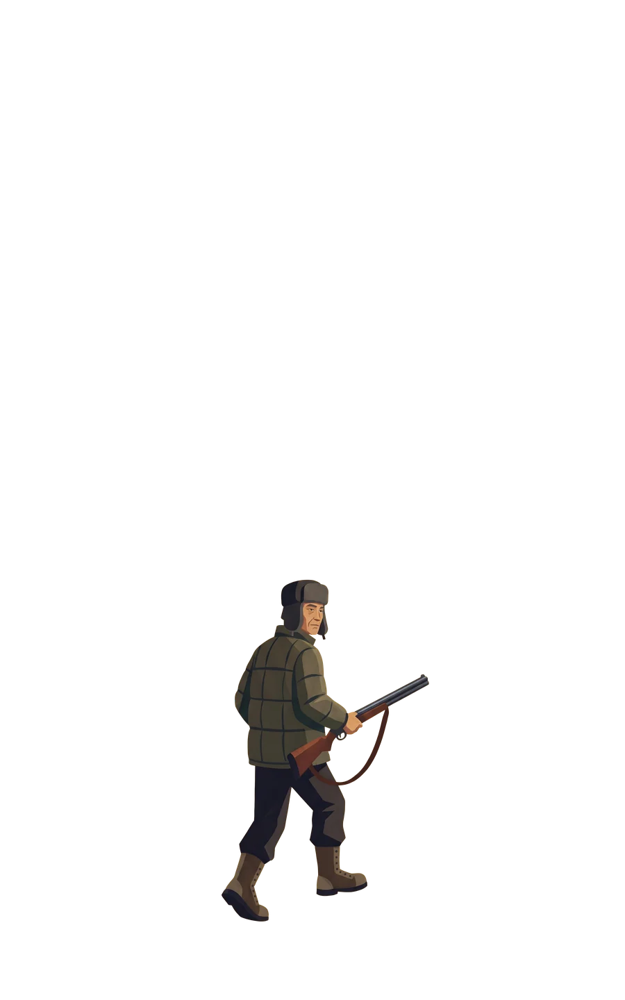

NGỮ VĂN 12 • ẤN BẢN SÁCH ĐIỆN TỬ
MUỐI CỦA RỪNG
Lời Mở Đầu
Văn học chân chính luôn là cuộc đối thoại thầm kín nhưng mãnh liệt giữa con người với thiên nhiên và với chính phần sâu thẳm nhất trong bản ngã mình. Ra đời năm 1986, truyện ngắn “Muối của rừng” của Nguyễn Huy Thiệp đã mở ra một lối viết tỉnh táo, sắc lạnh mà giàu lòng trắc ẩn với muôn loài.
Theo chân ông Diểu — người đàn ông sáu mươi tuổi mang khẩu súng hai nòng tối tân bước vào vương quốc đá vôi Nam Xung giữa tiết mưa xuân — chuyến đi săn bỗng trở thành cuộc thử thách lương tri khốc liệt: từng lớp trang bị văn minh bị đại ngàn thu hồi để con người nhận ra vẻ đẹp thiêng liêng của sự sống.
Ấn bản điện tử do Nhóm 3 biên soạn gồm sơ đồ 5 chương tương tác, lời bình chi tiết quá trình đi săn của ông Diểu và giọng đọc theo từng chương. Mời thầy cô và các bạn lật nhẹ trang sách để bước vào khu rừng mưa xuân năm ấy.
“Sau Tết Nguyên đán một tháng là thời gian thích nhất ở rừng. Cây cối đều nhú lộc non. Rừng xanh ngắt và ẩm ướt. Thiên nhiên vừa trang trọng vừa tình cảm. Điều ấy một phần là do mưa xuân.”
— Nguyễn Huy Thiệp, Muối của rừng (1986)
Nguyễn Huy Thiệp (1950 – 2021) quê gốc ở Thanh Trì (Hà Nội), từng có nhiều năm dạy học ở vùng núi Tây Bắc. Quãng đời gắn bó sâu sắc với núi rừng phía Bắc đã mang lại cho văn phong của ông cái nhìn chân thực về tập tính loài vật và chiều sâu triết lý về mối quan hệ giữa con người với tự nhiên.
Chọn ngôi kể thứ ba hạn tri đặt qua điểm nhìn xuyên suốt của ông Diểu, tác phẩm cho phép người đọc chứng kiến từng bước chuyển biến vi tế: từ ánh mắt trịch thượng của kẻ cầm súng đến khoảnh khắc sững sờ, xót thương và cúi đầu trước thiên nhiên rộng lớn.
Sơ Đồ Hành Trình 5 Chương
Vào Rừng Dâu Da Mùa Xuân
Chuyến đi săn của ông Diểu bắt đầu trong khung cảnh mùa xuân tràn đầy sức sống. Sau Tết Nguyên đán một tháng, mưa bụi lan tỏa khắp núi rừng Nam Xung khiến cây cối đâm chồi nảy lộc. Nhà văn Nguyễn Huy Thiệp nhận xét thiên nhiên lúc ấy thật “vừa trang trọng vừa tình cảm”.
Đối lập với vẻ thuần hậu của đất trời là dáng vẻ trang bị tận răng của người đi săn tuổi sáu mươi: quần áo ấm dày dặn, mũ lông che tai, đôi giày cao cổ, nắm xôi nếp và đặc biệt là khẩu súng săn hai nòng tuyệt đẹp do người con trai đang học ở nước ngoài gửi biếu.
Phát Súng Định Mệnh
Tới gần rặng dâu da sum suê quả chín, ông Diểu bắt gặp gia đình ba con khỉ đang quấn quýt trên mỏm đá cao: con khỉ đực to lớn đầu đàn, con khỉ cái nhanh nhẹn và chú khỉ con nhỏ bé. Bản năng săn đuổi khiến ông nín thở giương súng hướng thẳng vào chúng.
Tiếng súng vang rền xé toạc sự tĩnh lặng của rừng xuân. Con khỉ đực trúng đạn ngã gục. Ngay lập tức, khỉ cái liều mình lao trở lại bên cạnh nâng chồng trong những tiếng kêu thảng thốt. Thế nhưng lòng đa nghi ích kỷ khiến ông Diểu buông lời mắng nhiếc cay nghiệt: “Đồ gian dối, mày chứng minh tấm lòng cao thượng hệt như một bà trưởng giả!”
Bờ Vực Hõm Chết
Đúng lúc ông Diểu mải quát tháo xua đuổi khỉ cái, một biến cố nằm ngoài tính toán bỗng xảy ra. Nhân phút sơ hở ông đặt súng bên tảng đá, con khỉ con lao ra túm chặt lấy dây đeo khẩu súng hai nòng kéo lê bỏ chạy về phía triền đá hiểm trở.
Cuộc rượt đuổi nghẹt thở đẩy sinh linh bé nhỏ dồn tới mép Hõm Chết — khe núi sâu thẳm quanh năm đặc quánh sương mù tử khí. Không còn đường lui, chú khỉ con cùng khẩu súng hai nòng trượt chân lăn thẳng xuống vực mịt mù, vọng lên tiếng hú thê thảm.
Sụp Đổ Quyền Uy
Tiếng rú thảm thiết vọng từ lòng vực Hõm Chết khiến người thợ săn lão luyện bỗng bủn rủn chân tay. Toàn bộ vẻ uy nghi ban sáng sụp đổ trong tích tắc; ông Diểu kinh hoàng quay đầu chạy thục mạng “như ma đuổi” khỏi miệng vực lạnh lẽo.
Sự biến mất của khẩu súng hai nòng là bước ngoặt bản lề: thứ vũ khí đại diện cho bạo lực và tâm thế thống trị tự nhiên đã bị đại ngàn thu hồi vĩnh viễn. Tuy vậy, sau cơn hoảng loạn lắng xuống, lòng tự ái vẫn thúc giục ông quay lại vách đá một lần nữa.
Khoảnh Khắc Thức Tỉnh
Tiếc con mồi đã bắn trúng, ông Diểu leo lên mỏm đá cao để bắt sống khỉ đực. Leo được chục mét, mồ hôi túa ra nóng bức khiến bộ đồ dày thành gánh nặng; ông bèn dừng lại bên cây duối, cởi bỏ đôi giày cao cổ và quần áo ngoài vắt lên chạc cây, chỉ mặc độc chiếc quần lót rồi trèo tay không lên đỉnh đá.
Nhưng khi vừa chạm vào thân thể nóng hầm hập cùng hàm răng lập cập của con khỉ đực đang thoi thóp, đôi mắt run rẩy đầy van lơn của sinh linh ấy đã khiến ông sững người. Khoảng cách giữa thợ săn và con mồi lập tức bị xóa nhòa.
Nắm Cỏ Lào & Mảnh Vải Cuối Cùng
Giây phút nhìn thẳng vào đôi mắt cầu khẩn như mắt người ấy, mọi háo thắng săn bắt tan biến sạch không còn dấu vết. Lòng trắc ẩn và bản năng thiện lương trong ông Diểu bỗng trỗi dậy mãnh liệt.
Ông cuống quýt vơ một nắm cỏ Lào vò nát, cho vào miệng nhai kỹ để đắp cầm máu cho con khỉ. Không có mảnh vải giữ lá thuốc, ông không chút đắn đo tự nguyện cởi nốt chiếc quần lót duy nhất trên người để băng bó cho kẻ mình vừa định đoạt mạng.
Núi Lở & Cái Vẫy Tay Phóng Sinh
Bế con khỉ lần xuống núi, ông Diểu chứng kiến hai cuộc thu hồi khắc nghiệt của đất trời: trận núi lở bất ngờ sạt phẳng lối cũ, cuốn mất cây duối cùng quần áo và giày cao cổ; còn tại lùm cây đầu rừng, chiếc mũ lông và nắm xôi đã bị đống mối đùn đất mới đỏ au phủ kín thành cám.
Ngoái lại thấy con khỉ cái vẫn lặng lẽ bám theo sau không rời chồng nửa bước, ông chợt thấu hiểu và dịu dàng đặt con khỉ đực xuống đất, vẫy tay phóng sinh cho nó trở về với đại ngàn.
“Ở đời, trách nhiệm đè lên lưng mỗi sinh vật quả thật nặng nề!”
— Lời độc thoại thức tỉnh của ông Diểu
Mưa Xuân & Hoa Tử Huyền
Phóng sinh cho con khỉ xong, ông Diểu lặng lẽ rời rừng trong tình trạng hoàn toàn trần truồng. Giữ lòng tự trọng trước đồng loại, ông không đi đường cái quen thuộc mà chủ động rẽ sang một lối mòn đầy bụi gai vắng vẻ để tránh gặp người.
Ngay trên lối rẽ khiêm cung giữa màn mưa xuân mịn hạt ấy, ông bàng hoàng bắt gặp bạt ngàn hoa tử huyền đang nở trắng xóa — loài hoa nhỏ bé bằng đầu tăm, vị mặn, cứ ba chục năm mới nở một lần và được gọi là “muối của rừng”.
Tước Bỏ Để Tái Sinh
Nhìn lại hành trình đi săn của ông Diểu, cấu trúc nghệ thuật hiện lên rõ nét: mỗi bước ông mất dần trang bị vật chất cũng là một bước phần Người thiện lương hồi sinh mạnh mẽ:
Khởi đầu tại bìa rừng dâu da: Đủ đầy súng hai nòng, áo ấm, mũ lông, giày cao cổ và nắm xôi; tâm thế tự mãn, đa nghi bề trên.
Biến cố bờ vực Hõm Chết: Khỉ con kéo khẩu súng lao xuống vực sâu; vũ khí bạo lực bị tước bỏ, lòng kiêu hãnh rạn vỡ trước thiên nhiên.
Bước ngoặt trên mỏm đá: Tự cởi giày và áo ngoài vắt lên cây duối, chấn động lương tri trước ánh mắt cầu khẩn của khỉ đực bị thương.
Từ Bị Tước Bỏ Đến Tự Nguyện Trút Bỏ
Kết tinh trong mưa xuân: Núi lở cuốn đồ ấm, mối đùn vùi nắm xôi; đồng thời ông tự nguyện cởi mảnh vải cuối cùng băng cho khỉ rồi phóng sinh để gặp hoa tử huyền.
Giá trị cốt lõi của tiến trình nằm ở sự chuyển hóa từ bị tước bỏ sang tự nguyện trút bỏ: sự cứu rỗi đích thực bao giờ cũng khởi phát từ lựa chọn tự giác của trái tim nhân hậu.
Hệ Thống Biểu Tượng
Khẩu súng hai nòng biểu trưng cho tham vọng chinh phục và sức mạnh kỹ thuật bạo lực — thứ nhanh chóng rơi xuống đáy vực Hõm Chết ranh giới sinh tử. Còn núi lở và đống mối đùn đất đỏ au gợi nhắc quy luật thanh lọc âm thầm mà triệt để của tự nhiên trước mọi dấu vết phù phiếm.
Đẹp đẽ và hàm súc nhất là biểu tượng hoa tử huyền — “muối của rừng”: nếu biển kết tinh vị mặn của muối, thì đại ngàn sau ba mươi năm mới kết tụ loài hoa trắng bé xíu vị mặn ấy để tôn vinh lòng thiện lương và khát vọng thái hòa.
Dư Âm Thi Pháp & Lời Kết
Thành công nghệ thuật của truyện ngắn đến từ tình huống nghịch lý giàu kịch tính và ngôn ngữ cô đọng, kết hợp bút pháp hiện thực sắc lạnh với chất thơ huyền nhiệm của truyền thuyết dân gian.
Hình ảnh ông lão tóc bạc đi dưới làn mưa dịu hạt không ồn ào hân hoan mà lắng đọng suy tư sâu thẳm: “Mưa xuân dịu dàng nhưng rất mau hạt. Ông Diểu cứ trần truồng như thế, cô đơn như thế mà đi.” — lời nhắc nhở ta cúi mình gìn giữ “muối của rừng” trong tâm hồn.
Muối Của Rừng
“Bước vào rừng sâu với khẩu súng hai nòng kiêu ngạo, nhưng lại trở về tay trắng giữa làn mưa xuân dịu hạt. Khi lớp vỏ vật chất phù phiếm được trút bỏ, lòng trắc ẩn nở hoa như loài tử huyền ba mươi năm mới kết muối một lần.”